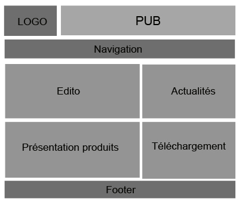
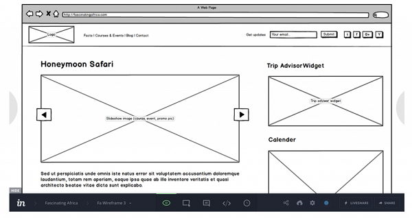

Pourquoi créer des wireframes?
Les wireframes permettent tout d’abord de gagner beaucoup de temps lors de la création de votre projet web. Pourquoi perdre des heures de travail à concevoir une interface trop chargée, inutile, ou mal organisée si c’est pour tout recommencer dès le premier retour de votre client ?
En créant une maquette, vous pouvez déjà produire une « base » sur laquelle évoluer et vous assurer de la conformité de votre réalisation avant de mettre la main à la pâte. C’est donc une belle économie de temps mais aussi d’argent pour vous et votre client.
Le wireframe permet également d’organiser votre temps de travail en le prévoyant à l’avance : vous serez capable de savoir quelles pages demanderont plus de travail ou, à l’inverse, quelles pages pourront être réalisées rapidement.
Enfin, le wireframe est un véritable canevas : simple, épuré, sans couleurs, il est un bon moyen pour vous d’organiser la racine de votre application ou de votre page, puis de savoir où votre créativité pourra s’exprimer sans en « faire trop ».
Qui doit créer le wireframe?
Pour qui?
Le maquettage et la conception de sites web ou d’application mobile
demandent bien souvent le recours à plusieurs domaines d’expertise :
le marketing,
le developpement,
la créa …
Le maquettage est généralement un travail de groupe. Dans le cadre d’un designer freelance recevant une demande de création de site web de la part d’une entreprise, c’est d’abord au client de spécifier ses attentes (quel médium, plutôt coloré ou épuré, très informatif ou plutôt objectif de conversions …).
Ensuite, c’est au webdesigner de réaliser une première version de la maquette, de la transmettre au client et de la modifier en fonction de ses retours.
Quelles informations doivent figurer sur la maquette?
Essayez de réaliser un document le plus synthétique possible. Pas la peine d’ajouter des textes travaillés et optimisés, indiquez simplement l’emplacement d’une ligne ou d’un bloc texte.
Il en va de même pour les images, vous pouvez les représenter par un simple rectangle gris. Le wireframe ne vise pas à présenter une version du site déjà travaillée, mais bien à représenter l’organisation générale de chaque page, élément par élément.
N’oubliez pas d’ajouter des éléments comme les boutons de réseaux sociaux, le menu, la barre de recherche ou les call to action. Pensez à bien mettre en avant le chemin de navigation de votre futur visiteur.
Il n’y a plus qu’à vous lancer ! Voici quelques solutions qui vous permettront de réaliser des wireframes facilement.
Réalisation d’une maquette fonctionnelle (Exemple d'un site internet)
- 1. Créer son site internet: commencer par la phase de zoning
- Une fois les fonctionnalités de votre site définies et l’arborescence établie, la première étape est simple et consiste à dessiner l’ébauche de votre site sur une simple feuille de papier. Il est également possible de créer cette ébauche sur des logiciels en ligne tels que Balsamiq ou Mockflow ou sur des logiciels bureautiques Mac et PC aux fonctions poussées tels que Sketch, Illustrator ou Affinity Designer.
- Le principe de la phase de zoning, comme son nom l’indique, est de diviser le site en plusieurs zones, permettant au client de voir un premier niveau d’agencement de son site internet.
- 2. La phase de wireframing lors de la création de son site
- Ensuite, une fois le zoning réalisé, on pourra travailler sur le wireframing, étape dont le but est de rajouter un niveau de détails supplémentaire au schéma précédent.
En reprenant son zoning, il faut alors décrire le contenu de chacune des zones définies. Si le contenu existe, il est également possible de l’ajouter directement dans le wireframe.
A cette étape du projet, il ne s’agit pas encore de définir les couleurs et tailles des différents éléments.
Il est également possible d’aller plus loin en réalisant un prototype consistant à lier les pages du wireframe en elles, laissant au client la possibilité de se projeter un peu plus dans la réalisation de son site internet et la navigation entre chacune des pages. - 3. Brief créatif: une part du cahier des charges de votre projet de site internet
-
En général, cette partie est la responsabilité du graphiste. Lors de la rédaction du cahier des charges, vous devez prévoir une partie concernant la direction artistique de votre projet.
Les éléments suivants y sont décrits : Couleurs, polices, logo, photos et tout élément composant votre site internet.
Ces éléments permettront au graphiste de développer, grâce au travail réalisé lors du Wireframing, des maquettes complètes du site internet. - 4. La phase de prototypage dans la création de son site web
- La phase de prototypage s’appuie sur le travail réalisé à l’étape du maquettage graphique. Elle permet d’ajouter un dimension interactive complète au client, en simulant le résultat quasi-final du futur site web.
Tests, images, charte graphique seront présents et cliquables, laissant le client se projeter complètement.
Une fois cette étape validée, les développements peuvent commencer.
Pour éviter toute mauvaise surprise, les différentes étapes seront validées régulièrement avec le client.


CONCEPTS À CONNAITRE
Avant d'être dans le milieu, il est facile de confondre UX et UI. C'est parce que ce sont deux métiers qui collaborent en design de produit.
UX = User eXperience (Expérience de l'utilisateur)
UI = User Interface (Interface pour l'utilisateur)
L'UX est un mix de parties visibles + parties invisibles qui, ensemble, contribuent à l'expérience globale de l'utilisateur sur l'application mobile.
L'UI est la partie "visible", "perceptible" d'un produit : c'est ce que l'on voit, entend, touche lorsque l'on utilise une application mobile par exemple.